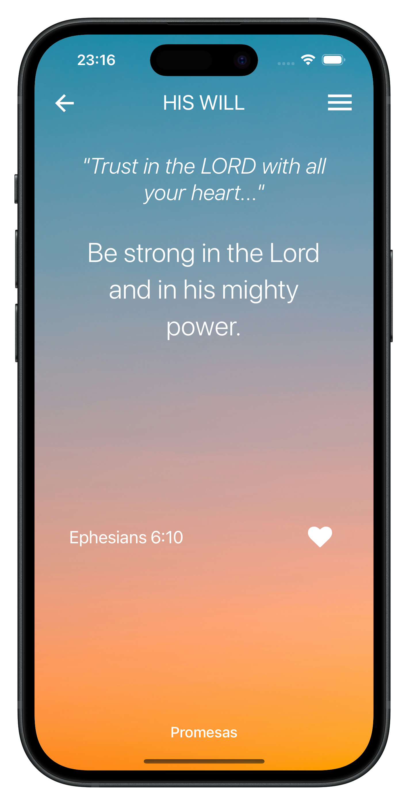
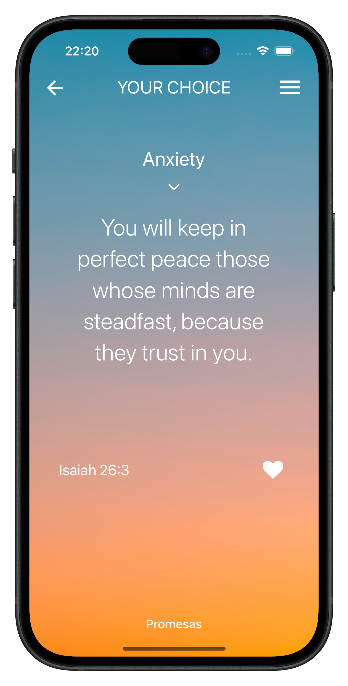

Search by what you feel
Browse promises by category — hope, strength, peace, anxiety and more — and land on the verse you need right now.
Find the right verse for the moment you're in. Search by hope, strength or peace, let a promise be chosen for you, and keep your favorites close.
Your favorites stay on your device


“You will keep in perfect peace those whose minds are steadfast, because they trust in you.”
“Be strong in the Lord and in his mighty power.”
“I can do all this through him who gives me strength.”
“The Lord is my shepherd, I lack nothing.”
“Cast all your anxiety on him because he cares for you.”
“Trust in the Lord with all your heart and lean not on your own understanding.”
Browse promises by category — hope, strength, peace, anxiety and more — and land on the verse you need right now.
Not sure where to start? Tap “His Will” and receive a specially selected promise for the moment.
Mark verses with a heart and build a personal collection of encouragement to revisit anytime.
Your favorites and preferences are stored on your device, not on our servers.
Pick a category and Promesas brings you verses that speak to it. Feeling anxious? Start with Isaiah 26:3 and keep going from there.
When you don't know what to search for, let Promesas select a promise for you. A simple way to start your day, or to pause in the middle of it.
Whatever you're carrying today, there's a word for it.
Promesas is an iOS app that helps you find Bible promises for the moment you're in. Browse by category, let a promise be selected for you, and save the verses that speak to you.
Open “Your Choice”, pick a category like hope, strength, peace or anxiety, and Promesas will show you verses for it.
Yes. Tap the heart on any verse to add it to your favorites and revisit it anytime.
Your favorites and preferences are stored locally on your device and aren't sent to our servers. Read the full Privacy Policy.
Promesas is available for iPhone on the Apple App Store.